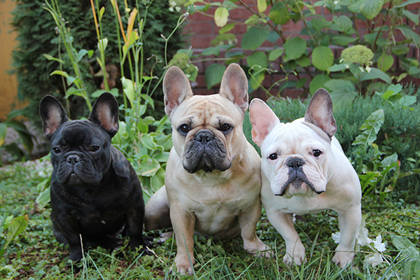

Bulldog Francés
El bulldog francés es un perro pequeño pero robusto. Las orejas de murciélago y la cara achatada son sus dos características más notables, además de su temperamento bonachón y afectuoso.
El bulldog francés es un perro pequeño pero robusto. Las orejas de murciélago y la cara achatada son sus dos características más notables, además de su temperamento bonachón y afectuoso.
El labrador retriever es una de las razas de perros más populares del mundo, teniendo en cuenta la cantidad de ejemplares registrados. Se conoce también como perro labrador o perdiguero de labrador.

El pastor de Brie, también conocido como Briard (llamado en inglés), es un perro muy llamativo por su largo y hermoso pelaje. También destaca por su temperamento protector y leal.
El pastor del sur de Rusia es un perro de gran tamaño destinado al pastoreo y a la guarda. Su origen no está del todo claro y existen tres hipótesis, aunque con algo en común: un antepasado principal es el lobo. Con carácter, en ocasiones difícil y en otras muy leal, calmado y cariñoso.
Los Lakeland terrier son unos perros de tamaño pequeño a mediano, muy alegres, cariñosos, activos y curiosos, pero, a la vez, con un gran instinto de caza. Esto se debe a que se crearon para acabar con los zorros que amenazaban a las ovejas de Lakeland, en Inglaterra, de donde son originarios.
El Bichón Maltés es una raza de tamaño toy surgida del Mediterráneo, siendo Italia quien tomó el patrocinio de la raza. Los orígenes están asociados a Italia, Malta y a la isla de Mljet (Croacia) aún así, su origen es algo incierto.

El border collie es considerado el perro más inteligente del mundo, según Stanley Coren, el profesor e investigador neuropsicológico del famoso libro "La inteligencia de los perros", publicado en 1994.
El cocker spaniel inglés es un perro muy inteligente, juguetón y sociable. Siente mucho apego por su familia humana y necesita estar siempre junto a los suyos para sentirse bien, ya que de lo contrario podría sufrir ansiedad por separación.
El mastín inglés, también conocido como mastiff, es una raza de perro molosoide. Es decir, se caracteriza por tener un cuerpo robusto, músculos fuertes y una cabeza grande con hocico corto.